Clube Amigos dos animais SM
Defender o direito dos animais e o respeito à natureza, em todas as suas formas de vida.
Entrar em contato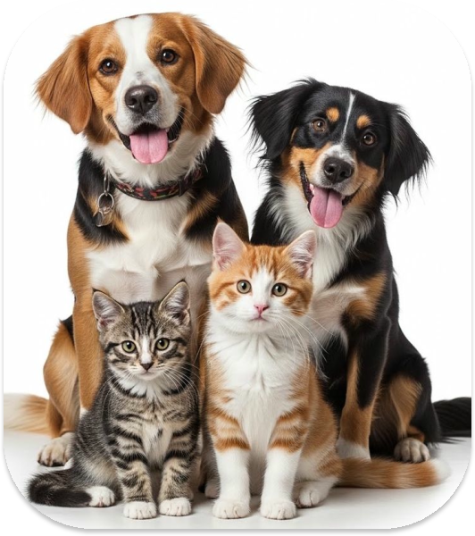
Quem somos?
Clube Amigos dos Animais de Santa Maria - RS é uma ONG criada em 1993 a qual tem como objetivo principal defender os direitos dos animais e o respeito à natureza, em todas as suas formas de vida.
Entrar em contato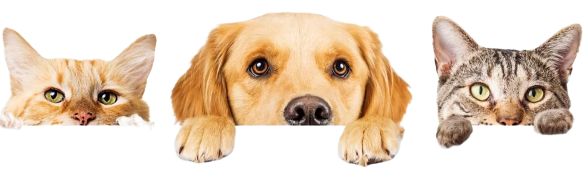
Quais nossos objetivos?
Resgate e proteção
Acolher animais em situação de abandono ou maus-tratos em Santa Maria, proporcionando atendimento veterinário e recuperação digna.
Adoção responsável
Conectar cães e gatos reabilitados a famílias conscientes, garantindo processos de triagem seguros e acompanhados.
Controle populacional
Promover e apoiar campanhas de castração como medida prioritária para conter a superpopulação animal urbana.
Educação comunitária
Conscientizar a população local sobre guarda responsável, combate aos maus-tratos e preservação da saúde pública.
Nossa galeria
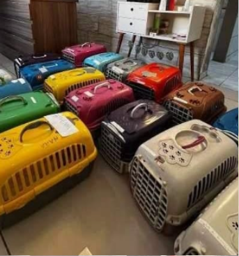
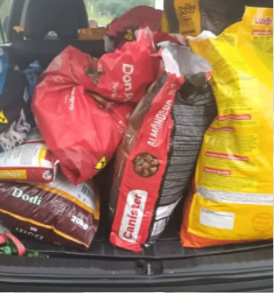
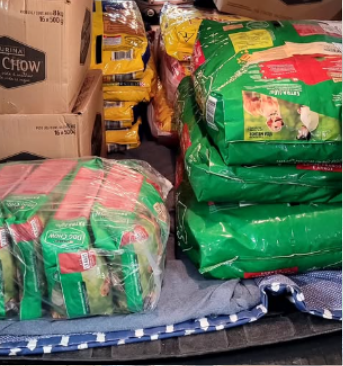
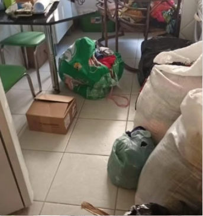
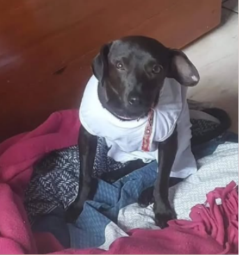
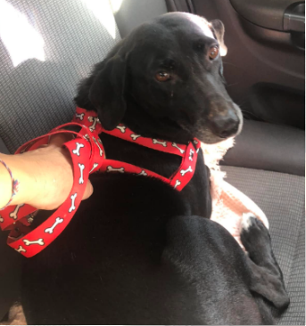
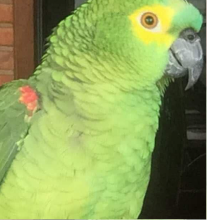
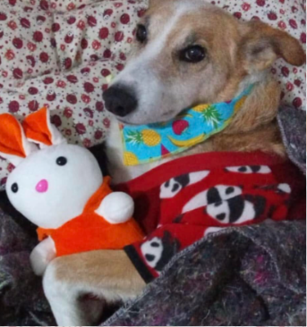
Como posso ajudar?
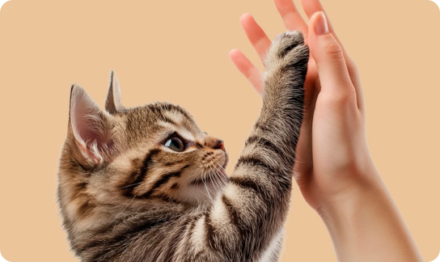
01
Doação financeira (PIX)
CNPJ: 16.927.511/0001-93
02
Ração e medicamentos
Aceitamos doações de ração (cães e gatos, adultos e filhotes), desparasitantes, vacinas, produtos de limpeza, cobertores e toalhas.
03
Seja um lar temporário
Não pode adotar em definitivo? Abrigar um animal convalescente por algumas semanas salva vidas enquanto aguarda adoção definitiva.
04
Divulgue e compartilhe
Acompanhe as nossas redes sociais, partilha os animais disponíveis para adoção e ajude a nossa mensagem a chegar a mais tutores responsáveis.
Ficou alguma dúvida?
Cada situação merece atenção. Conte sua dúvida à equipe e confirme as informações para dar o próximo passo.